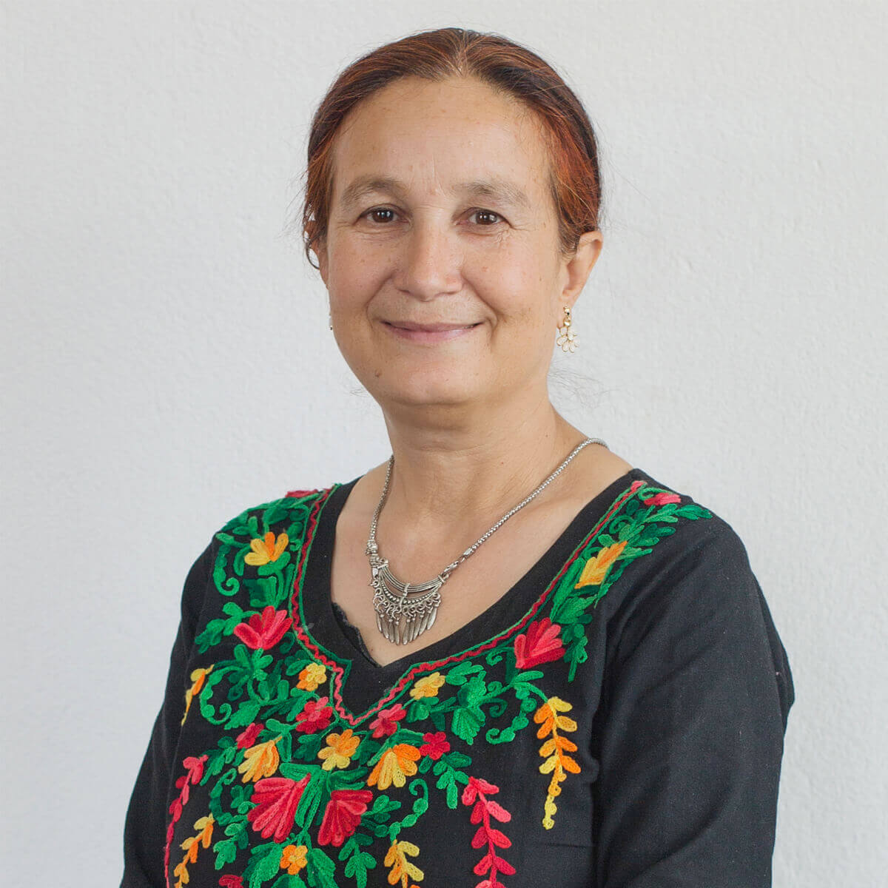

Mr. Kunda Dixit is the editor and publisher of the Nepali Times. He is a journalism graduate of Columbia University and started his career with BBC Radio in New York. He has been writing on global development and environmental issues for Inter Press Service, where he served as Regional Editor, Asia-Pacific. He was also Regional Director for Panos South Asia. He teaches journalism at Kathmandu University and is visiting faculty at New York University Abu Dhabi, and is the author of the books: ‘Dateline Earth: Journalism As If the Planet Mattered’ and the trilogy on the Nepal conflict, ‘A People War’.

ARUNA UPRETY
Vice Chairperson - Board Healthcare Lead
Dr. Aruna Uprety is a globally recognized leader on women’s issues within Nepal. She had advocated / lobbied for abortion rights in Nepal, has testified before the United States Congress of issues of women’s trafficking in Nepal, and currently leads the efforts against chhaupadi practices in the Far West region of Nepal. She also had worked as public Health specialist in Iran, Afghanistan, India, Sudan, and Laos from 2002 to 2010. Dr. Uprety is the author of Health Guidelines for Women with Disabilities, Junk Food and Wrong Advertisement and Its Impacts on Health, and Adolescent Reproductive Health, as well as numerous articles on women’s health and rights. She writes regularly about health and social issues.
SP KALAUNEE
General Secretory - Board Strategic Lead
SP is the former Executive Director of Nyaya Health Nepal. He has been at the core in developing the organization’s partnership model with the government of Nepal, Ministry of Health and Population. Prior to NHN, SP served as the acting executive director of a Nepali nonprofit, and led the organization’s functions in health, education, and community development sectors. SP also worked as the principal of a secondary school, and as a teacher tutoring students from primary level to the university level in different schools in Nepal, Vietnam, Finland, and USA. He received his M.A. (Sociology), M.A (English Literature), B. Ed., and LL.B. His doctoral study was in Organizational Leadership from Eastern University, USA where he was an adjunct faculty member at the School of Leadership and Development.
BHASKAR RAJ PANT
General Secretory - Board Strategic Lead
Dr. Bhaskar Raj Pant, MD is practicing Consultant Orthopedic Surgeon with a primary specialty interest in Joint Replacement, Reconstruction and Trauma. He is the Chief Consultant Orthopedic Surgeon at HAMS Hospital, Nepal. Prior to this, Dr. Bhaskar was the Assistant Director of Joint Replacement and Sports Medicine at Grande International Hospital, Nepal. He did his Fellowship in Joint Replacement and Sports from USA, an advanced course in Joint Replacement from, Switzerland and Knee Fellowship from Japan. He has also pursued Advanced AO Trauma from Thailand and Global Health Delivery course from Harvard University, USA. Dr. Bhas oversees Rural Trauma Care across our service areas in Achham and Dolakha.
Dileep Agrawal founded and established Nepal’s largest Internet service provider (ISP) in 1995 while attending Bates College in the US. Over the years, WorldLink has registered tremendous sustained growth and provides services ranging from Internet and data connectivity to cloud computing and managed enterprise services. WorldLink has grown to be not only the largest ISP in Nepal, but one of the largest IT services companies employing over 2,900 people throughout the country. Mr. Agrawal is in-charge of overall corporate management, strategy and business development. A recognized pioneer in Nepal’s IT industry, he regularly appears in national and international media. He has co-founded several companies and non-profit organizations and serves on their boards.

KALPANA GAIRE
Joint Secretary
SP is the former Executive Director of Nyaya Health Nepal. He has been at the core in developing the organization’s partnership model with the government of Nepal, Ministry of Health and Population. Prior to NHN, SP served as the acting executive director of a Nepali nonprofit, and led the organization’s functions in health, education, and community development sectors. SP also worked as the principal of a secondary school, and as a teacher tutoring students from primary level to the university level in different schools in Nepal, Vietnam, Finland, and USA. He received his M.A. (Sociology), M.A (English Literature), B. Ed., and LL.B. His doctoral study was in Organizational Leadership from Eastern University, USA where he was an adjunct faculty member at the School of Leadership and Development.